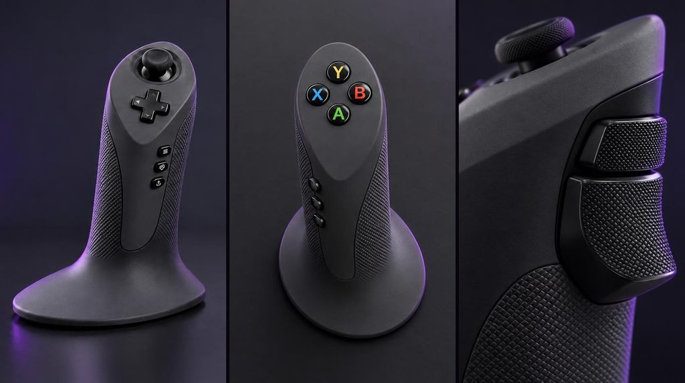
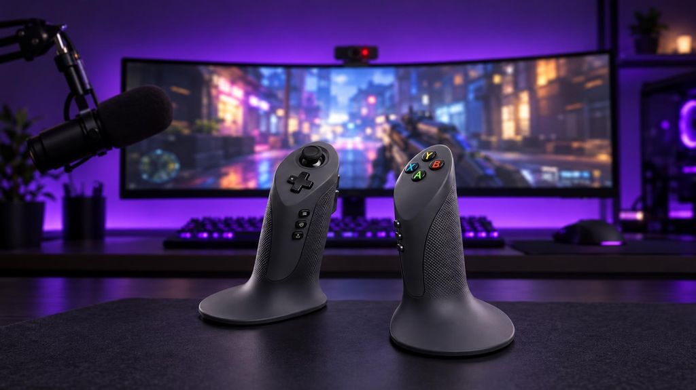
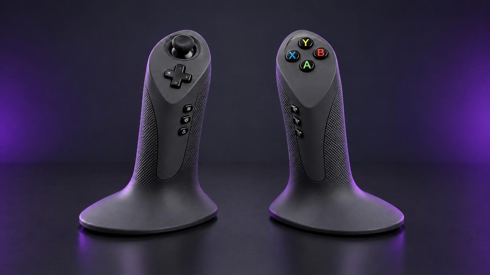
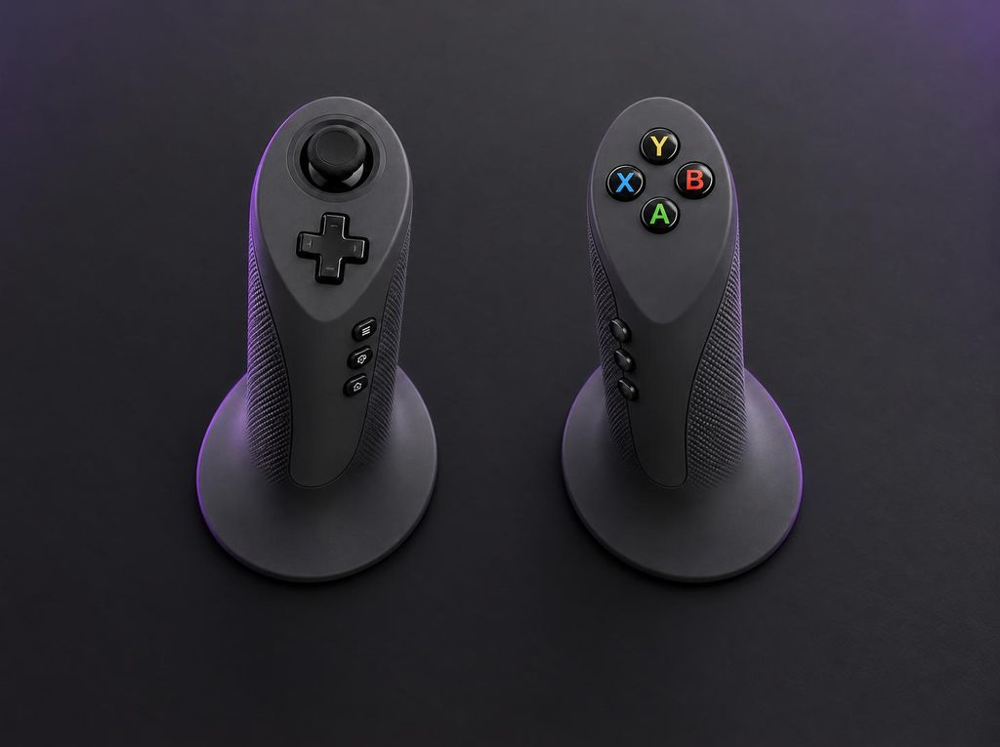
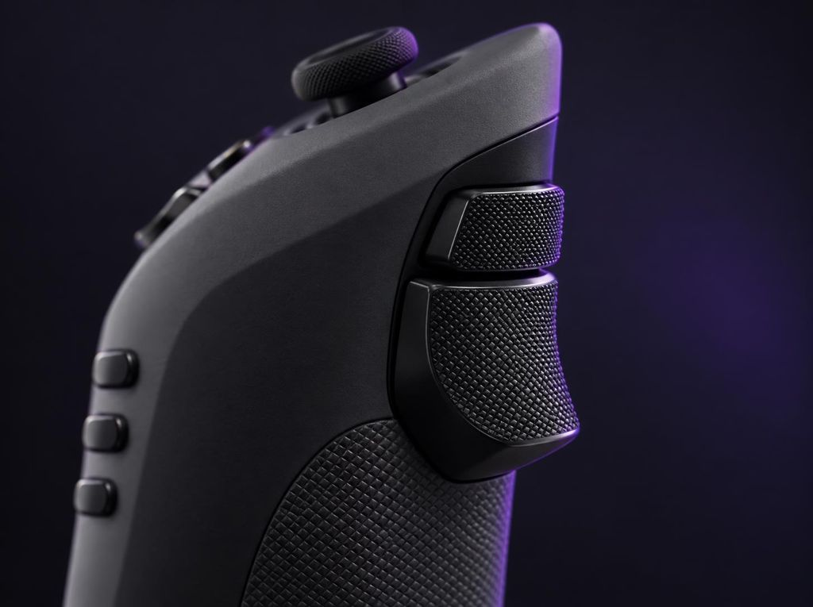
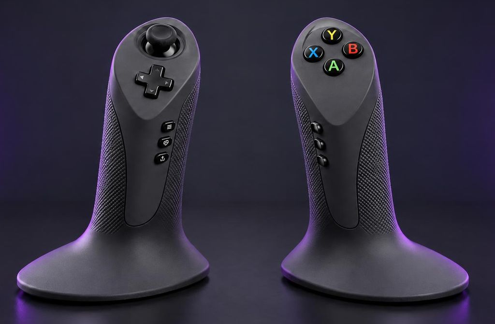
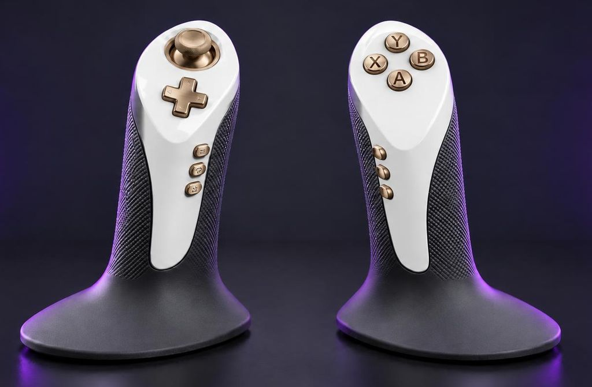
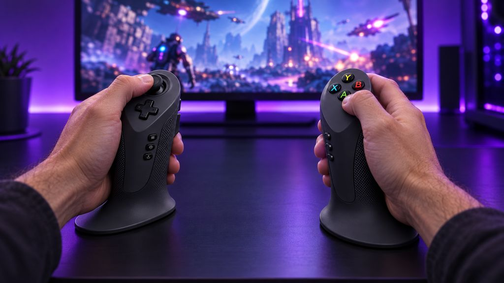

Analogue Joystick
Smooth, multi-directional movement under your left thumb, driving on-screen movement and look with the precision you'd expect from a flagship controller.
Dual Strike is a two-piece gaming controller-mouse that ends the trade-off between competitive precision and the comfort of a familiar grip. One sculpted shell for each hand.
For years, players have been forced to choose: the precision and rapid aiming of a mouse, or the comfort and familiarity of a controller. Dual Strike ends that compromise. Two ergonomically shaped shells, one for each hand, combine high-resolution mouse tracking with analogue thumbstick navigation, programmable buttons, analogue triggers and a familiar ABXY layout.


The prototype is almost complete, and we're going to show it to you live. Join us for the first hands-on stream: we'll put Dual Strike through real games, take your questions and share what's next on the road to crowdfunding.
Each shell is built around a one-handed grip. Every button, stick and trigger sits within natural reach, so the device disappears into the way you already play.
Smooth, multi-directional movement under your left thumb, driving on-screen movement and look with the precision you'd expect from a flagship controller.
A familiar four-way D-pad on the left shell handles menus, weapon swaps and quick-fire navigation, right where your thumb already lives.
The right shell carries a familiar ABXY button layout, ready for jumps, reloads and abilities under your right thumb without taking your hand off the device.
A high-resolution optical sensor sits beneath the right shell, tracking movement across your desk for the kind of fine aiming a thumbstick simply can't deliver.
Three programmable buttons on the inside of each shell. Bind them to anything from melee to push-to-talk for a layout that's truly yours.
A bumper and an analogue trigger sit along the upper edge of each shell, giving variable input under your index or middle finger for nuanced shooting and acceleration.
USB-C on each shell powers the internal battery and supports wired play: wireless when you want it, plugged in when you need it.
Each shell transmits independently, with a paired receiver combining both signals into one input device. No proprietary drivers, no perceptible latency.
Every input sits within reach of a single, natural grip. No awkward stretches, no compromised reach. Pick up a shell and start playing.
A weighted base, a sculpted thumb crown, a textured grip and a recessed trigger well. Each shell stands ready on the desk and tracks the moment you pick it up.





Concept renders of the latest design. Final production details may vary.
Each shell carries its own microcontroller, battery and wireless transmitter. Their signals are combined by a paired receiver and presented to the host PC or console as a single input device. It behaves as one device to your operating system, while feeling like two natural extensions of your hands.

Dual Strike is for the controller player who envies a streamer's flick shot, and the mouse player who has always wished they could lean back. It's for everyone in between.
The prototype is almost complete and we're preparing for crowdfunding. Catch the first live reveal on Twitch and Facebook, and help shape the first production run.
We're a small team finishing the Dual Strike prototype ahead of our live reveal and crowdfunding campaign. If you're a player, streamer, retailer, investor, journalist or potential partner, we'd love to hear from you.
enquiries@aimaura.comWe respond to every message personally.